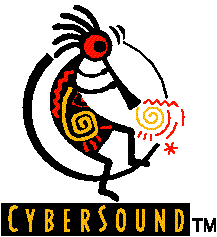

Return to previous page | Return to menu
Fonts prepared by other companies in advance in the application for development And SE (sound effects) libraries, the development company's license agreement The company name logo must be displayed in a designated place.
Sega Saturn stipulates the following in order to meet the usage conditions in the contract with InVision. Shall be provided. This library must be used if this library is used in an application. Display the CyberSound logo according to the regulations.
CyberSound logo should be displayed in the following locations regardless of whether it is in-house or outsourced.

The* Minimize the size of all characters used in the logo.
* For the logo design displayed on the outer box, follow the instructions in the separate printed regulations.
If FONTWORKS fonts are used in the application, add the following text to the instruction manual in either Japanese or English.
“The fonts used in the game are from FONTWORKS International Limited. The names, company names, and logos of FONTWORKS fonts are trademarks or registered trademarks of FONTWORKS International Limited.”
"Fonts, using in this game are supported by FONTWORKS International Limited.FONTWORKS product-names and FONTWORKS logos are registored trademarks or trademarks of FONTWORKS International Limited.Copyright 1994 FONTWORKS International Limited.
More